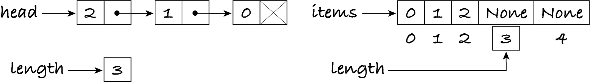

7.1. Stacks
A pile of boxes is a stack. Only the topmost box can be easily accessed. To access any other box, one usually must remove boxes from the top, one by one. To re-form the pile, one must put each box back on top of the previous boxes.
Computationally, a stack is a restricted sequence in which new items are added to and removed from only one end of the sequence. A stack can be seen as a sequence ordered by ‘age’. The ‘oldest’ item, the one added first, is at the bottom of the stack. The ‘youngest’ item, the one added last, is at the top. A stack is a last-in, first-out (LIFO) sequence: the last item to be added is the first to be removed.
Info: Some texts also use FILO (first-in, last-out) as a synonym for LIFO.
7.1.1. The stack ADT
The stack ADT has five operations, where s is some stack:
Operation |
Effect |
Algorithm in English |
|---|---|---|
new |
create a new empty stack |
let s be an empty stack |
size |
obtain the size of s |
│s│ |
push |
put an item on top of s |
push item on s |
pop |
remove the top item, if s isn’t empty |
pop s |
peek |
access the top item, if s isn’t empty |
top of s |
A common alternative pop operation also returns the removed item. This makes the peek operation redundant: the top item can be inspected by popping and pushing it.
A stack is a sequence of objects and so we can use sequence ADT operations in defining the stack ADT. The push, pop and peek operations are simply restricted versions of the insert, remove and indexing operations of the sequence ADT.
ADT: stack, a sequence of objects
Exercise 7.1.1
Here again is the definition of the insert operation of the sequence ADT from Section 4.6. Modify it for the push operation for a stack.
Exercise 7.1.2
Modify the definitions of the general remove and indexing operations to become the definitions of the pop and peek operations.
7.1.2. Implementing with an array
Python doesn’t provide a stack data type because stacks can be easily simulated with lists, as long as we only access, add and remove the last item. Here’s a list being used as a stack:
[1]:
numbers = [] # stack
for number in range(3):
print("push", number)
numbers.append(number)
while len(numbers) > 0:
print("pop", numbers[-1])
numbers.pop(-1)
push 0
push 1
push 2
pop 2
pop 1
pop 0
This example clearly shows the last-in, first-out behaviour of stacks: the items are popped in the opposite order they were pushed.
Since Python’s pop method also returns the removed item, it would be daft not to make use of it when convenient. The last two lines of the cell above can be rewritten as a single line: print('pop', numbers.pop(-1)).
Lists are implemented with dynamic arrays, which means that all stack operations have constant-time complexity as they don’t involve any shifting of items.
Using list operations makes it harder to spot that a list is being used as a stack, and this may lead to errors when the code needs to be changed. We therefore implement the ADT with our own class, which simply uses a Python list and calls the corresponding operations.
[2]:
# this code is also in m269_stack.py
class Stack:
"""A last-in, first-out sequence of objects, implemented with a Python list."""
def __init__(self) -> None:
"""Initialise the stack to be empty."""
self.items = []
def size(self) -> int:
"""Return the number of items in the stack."""
return len(self.items)
def peek(self) -> object:
"""Return the top item in the stack.
Preconditions: self.size() > 0
"""
return self.items[-1]
def pop(self) -> object:
"""Remove and return the top item from the stack.
Preconditions: self.size() > 0
"""
return self.items.pop(-1)
def push(self, item: object) -> None:
"""Put the given item on top of the stack.
Postconditions: post-self.peek() == item
"""
self.items.append(item)
Let’s test the class with the same example as before:
[3]:
numbers = Stack()
for number in range(3):
print("push", number)
numbers.push(number)
while numbers.size() > 0:
print("pop", numbers.peek())
numbers.pop()
push 0
push 1
push 2
pop 2
pop 1
pop 0
Info: Class Stack in package java.util implements the stack ADT in Java. It’s a subclass of java.util.Vector, a dynamic array data type.
We can implement a bounded stack with a static array, like we did for a bounded sequence, by keeping track of the current size of the stack.
7.1.3. Implementing with a linked list
The stack ADT can also be implemented with the linked list data structure. With an array, the top item is the last one, at the highest index, so that the push and pop operations don’t have to shift items. With a linked list, the top item is the first one, in the head node, so that the push and pop operations don’t have to traverse the linked list.
Here’s the same stack, obtained by pushing 0, 1 and 2 in this order, stored in a static array with capacity 5, and in a linked list. In both cases, an additional instance variable keeps track of the length.
The implementation with a linked list is a special case of implementing sequence operations with a linked list, e.g. the push operation corresponds to inserting at index 0. Each stack operation takes constant time, as it involves a few assignments to update pointers and an integer operation to update the length.
[4]:
# this code is also in m269_stack.py
class LinkedListStack:
"""A last-in, first-out sequence of objects, implemented with a linked list."""
class Node:
"""A node in a linked list."""
def __init__(self, item: object) -> None:
"""Initialise the node with the given item."""
self.item = item
self.next = None
def __init__(self) -> None:
"""Initialise the stack to be empty."""
self.head = None
self.length = 0
def size(self) -> int:
"""Return the number of items in the stack."""
return self.length
def peek(self) -> object:
"""Return the top item in the stack.
Preconditions: self.size() > 0
"""
return self.head.item
def pop(self) -> object:
"""Remove and return the top item from the stack.
Preconditions: self.length() > 0
"""
item = self.head.item
self.head = self.head.next
self.length = self.length - 1
return item
def push(self, item: object) -> None:
"""Put the given item on top of the stack.
Postconditions: post-self.peek() == item
"""
node = LinkedListStack.Node(item)
node.next = self.head
self.head = node
self.length = self.length + 1
And once more the same test:
[5]:
numbers = LinkedListStack()
for number in range(3):
print("push", number)
numbers.push(number)
while numbers.size() > 0:
print("pop", numbers.peek())
numbers.pop()
push 0
push 1
push 2
pop 2
pop 1
pop 0
Exercise 7.1.3
Is it better to implement stacks with dynamic arrays or linked lists?